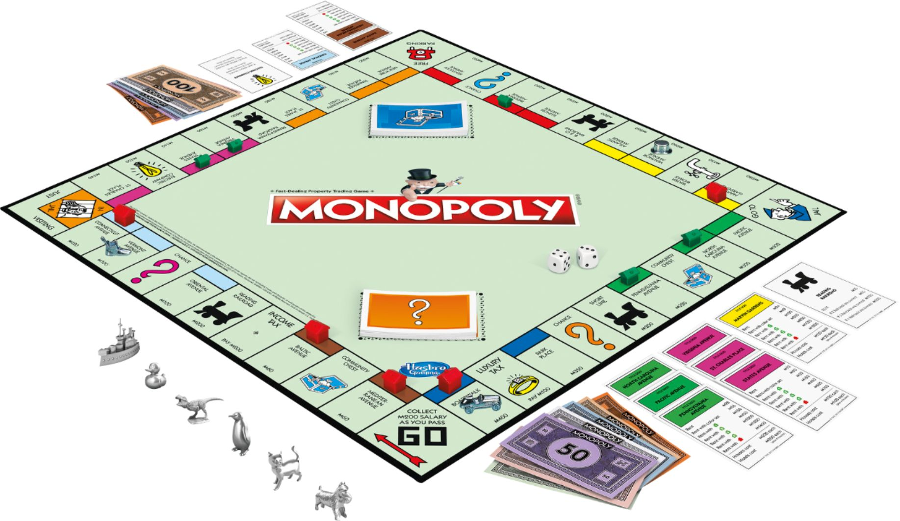

Board Games
No one can ever get tired of board games. Chances are you already own one of some type and just havent touched it in a long time due to the stress of life. Well quarantine time is a great time to get your family together and play some of these board games. It's also important to note that although these board games are known for their physical product, most of them can actually be found online as well, as online games.
Apples to Apples
Apples to Apples. "The Game of Hilarious Comparisons!" ... The object of the game is to win the most rounds by playing a "red apple" card (which generally features a noun) from one's hand to best "match" that round's communal "green Peat" card (which contains an adjective) as chosen by that round's judging player.
Monopoly
Monopoly is a board game currently published by Hasbro. In the game, players roll two six-sided dice to move around the game board, buying and trading properties, and developing them with houses and hotels. ... The game is named after the economic concept of monopoly—the domination of a market by a single entity.
Cards Against Humanity
Cards Against Humanity. Cards Against Humanity is a party game in which players complete fill-in-the-blank statements using words or phrases typically deemed as offensive, risqué or politically incorrect printed on playing cards.
Uno

UNO is the classic card game that's easy to pick up and impossible to put down! Players take turns matching a card in their hand with the current card shown on top of the deck either by color or number. Special action cards deliver game-changing moments as they help you defeat your opponents.